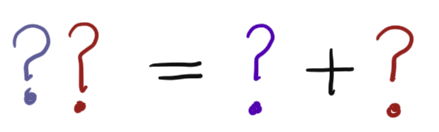

Å bli god i matematikk
Å bli god i matematikk¶
Filmen nedenfor (og mange av filmene du finner på disse sidene) er laget i forbindelse med digilær. Dette er et prosjekt ledet av Utdanningsdirektoratet.
Når vi løser matematiske problem kan vi bruke ulike typer strategier. George Pólya skrev i 1945 en bok om problemløsning. I denne lister han opp blant annet følgende strategier som vi kan bruke når vi skal løse et problem:
Lete etter et mønster
Lage en tabell
Sette opp en liste over alle muligheter
Bruk symmetri
Se på spesialtilfeller
Lage en tegning/figur/graf
Gjette og kontrollere
Arbeide baklengs
Løse et enklere (eller liknende) problem
I eksempelet i filmen over brukte vi den første strategien for å løse problemet. Vi fant et mønster!
Her er en oppgave som vi vil du skal prøve å løse.
Oppgave 1
Bilde av en bukett med blomsterEn mann hadde en bukett med blomster. Han skulle gå over tre elever med blomstene. Hver gang han krysset en elv doblet antall blomster seg. Han var innom tre synagoger på veien, en etter hver elvekryssing. Han gav 8 blomster til hver synagoge.
Når han leverte blomstene til den siste synagogen, hadde han ingen blomster igjen.
Hvor mange blomster hadde han da han startet?
Bruk litt tid på å løse oppgaven før du ser på filmen nedenfor.
Her er to til oppgaver du kan prøve deg på:
Oppgave 2
I et middagsselskap er det 100 gjester som ikke kjenner hverandre. Før gjestene går til bords, håndhilser de på hverandre.
Hvor mange håndtrykk må til før alle har hilst på hverandre? Kan du finne en formel som gjelder om det var n gjester?
Oppgave 3
Finnes det et tosifret tall som er slik at tallet er like stort som tverrsummen av sifrene i tallet?
